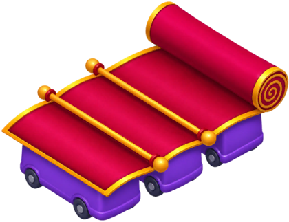
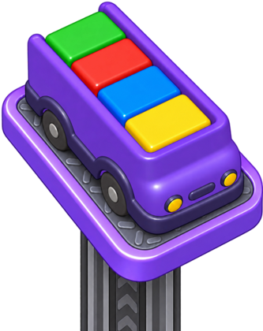
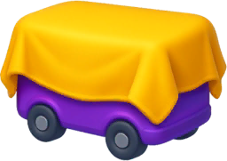
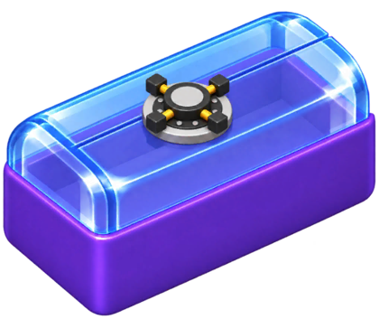
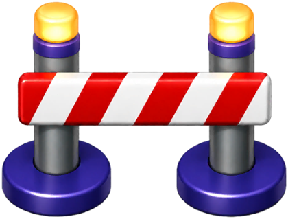
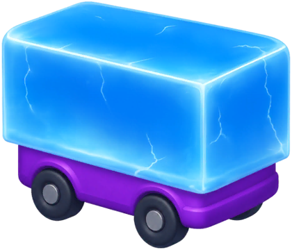
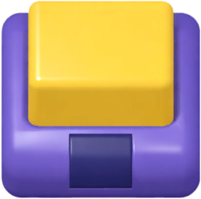
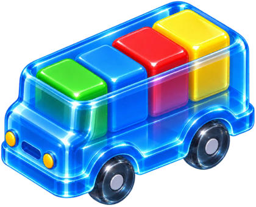
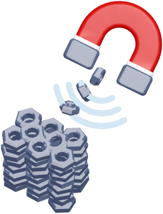
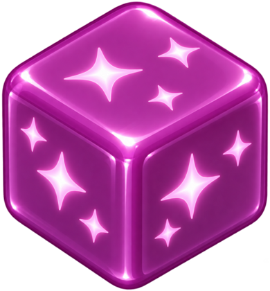

22 · Khối ẩn
Xuất hiện lần đầu: Level 7
H/h trên token là HiddenCube; màu logic nằm trước dấu _.
Mã trực tiếp trong local: 1130 màn
Mã màu · feature · mức độ xác minh
Hình item trích từ asset gốc; tên bên dưới là tên asset để đối chiếu. Phần thưởng có mã loại:số lượng trong các bảng được gắn icon tương ứng.



Carrier là xe chứa nhóm màu, ConveyorSlot là vị trí trên đường vòng, Block là đơn vị dữ liệu/nhóm xử lý. Hình thức Sand/Liquid có thể hiển thị rất nhiều hạt từ một đơn vị logic; thống kê token không đo số hạt render.
Thứ tự tăng dần theo level xuất hiện đầu tiên trong bộ local. Các mục chưa thấy mã trực tiếp ở local đặt cuối danh sách; dữ liệu Daily được ghi riêng, không trộn vào tiến trình màn chính. Số trước tên là ID cơ chế, không phải thứ tự mở khóa.
Xuất hiện lần đầu: Level 7
H/h trên token là HiddenCube; màu logic nằm trước dấu _.
Mã trực tiếp trong local: 1130 màn

Xuất hiện lần đầu: Level 20
H trên xe: đối số là màu rèm, không phải màu khối bên trong.
Mã trực tiếp trong local: 667 màn

Xuất hiện lần đầu: Level 41
Đối số là số lượt hoàn thành xe: mỗi CarrierComplete giảm 1 trên tất cả két chưa mở; không chỉ định nhãn/màu xe. Parse không được thì mặc định 1.
Mã trực tiếp trong local: 47 màn

Xuất hiện lần đầu: Level 60
Rock khóa tương tác của xe; không phải màu xám thay thế toàn bộ ColorData.
Mã trực tiếp trong local: 228 màn
Xuất hiện lần đầu: Level 81
Feature gắn vào nhóm khối; nhận cả H kết hợp Sticky trên nhiều dòng.
Mã trực tiếp trong local: 37 màn

Xuất hiện lần đầu: Level 101
Đối số A/E là nhãn xe. Chỉ cần một xe trong danh sách hoàn thành (OR), không phải màu, số hit hay yêu cầu hoàn thành tất cả.
Mã trực tiếp trong local: 114 màn
Xuất hiện lần đầu: Level 150
Mỗi dòng có thể chứa nhiều nhãn xe; args là màu chìa tương ứng.
Mã trực tiếp trong local: 392 màn
Xuất hiện lần đầu: Level 150
R_K_G: khối R mang chìa G; hai màu có vai trò khác nhau.
Mã trực tiếp trong local: 392 màn
Xuất hiện lần đầu: Level 201
Args là màu yêu cầu của cờ; ProcessFeature bật scale model về 1.
Mã trực tiếp trong local: 327 màn
Xuất hiện lần đầu: Level 250
IceCon là alias của ConnectedIce/Connected (25); prefab gốc có Rope/Knot, khác Ice (4).
Mã trực tiếp trong local: 160 màn
Xuất hiện lần đầu: Level 300
Một dòng gắn thảm cho một hoặc nhiều xe; có Forward/BackOffset và WidthOffset.
Mã trực tiếp trong local: 214 màn

Xuất hiện lần đầu: Level 350
Covers được bật scale 1; xe nhận customMaxBlockCount từ conveyor.
Mã trực tiếp trong local: 82 màn
Chưa xác định lần xuất hiện trong level local
Có enum Crate/Cr, không có nghĩa đã có màn triển khai.
Mã trực tiếp trong local: 0 màn
Chưa xác định lần xuất hiện trong level local
Có enum và icon; icon không chứng minh chế độ đang được bật.
Mã trực tiếp trong local: 0 màn
Chưa xác định lần xuất hiện trong level local
Phân biệt enum tổng hợp 23 với từng feature Lock 5 và Key 6.
Mã trực tiếp trong local: 0 màn

Chưa xác định lần xuất hiện trong level local
Material kính có alpha; không được ép toàn bộ thành opaque.
Mã trực tiếp trong local: 0 màn

Chưa xác định lần xuất hiện trong level local
Dùng MetalMaterial/MetalGroupMesh riêng, không phải color token xám thường.
Mã trực tiếp trong local: 0 màn

Chưa xác định lần xuất hiện trong level local
Dùng SurpriseMaterial riêng và nhánh xử lý chuyển nhóm.
Mã trực tiếp trong local: 0 màn

Chưa xác định lần xuất hiện trong level local · Daily: màn 1
Capacity parse từ args, giới hạn 5–12; cú pháp có thể capacity:màu.
Mã trực tiếp trong local: 0 màn
Chưa xác định lần xuất hiện trong level local
Hệ có hàng đợi carrier, platform và chu kỳ đổi xe.
Mã trực tiếp trong local: 0 màn
Trong token màu như R_H, parser chuyển Hidden thành HiddenCube (22). Trong dòng feature của xe như A-H_B, parser chuyển thành HiddenTruck (21). Vì vậy không thể chỉ tìm chữ H rồi kết luận cả hai cùng một cơ chế.
Base là mã màu nền, Shade là biến thể sắc độ. Các ô alpha = 0 tham chiếu material; không được trình bày chúng như màu đen thực tế trong game.
| Mã | Base | Shade | Màu / nguồn |
|---|---|---|---|
| R | 1 | 0 | #c50706 |
| LR | 1 | 1 | Material quyết định; RGBA alpha = 0 |
| DR | 1 | 2 | Material quyết định; RGBA alpha = 0 |
| B | 2 | 0 | #227bc8 |
| LB | 2 | 1 | #68a7d7 |
| DB | 2 | 2 | #19578c |
| G | 3 | 0 | #3ccc15 |
| LG | 3 | 1 | Material quyết định; RGBA alpha = 0 |
| DG | 3 | 2 | #359225 |
| Y | 4 | 0 | #d1a000 |
| LY | 4 | 1 | Material quyết định; RGBA alpha = 0 |
| DY | 4 | 2 | Material quyết định; RGBA alpha = 0 |
| P | 5 | 0 | #a858c9 |
| LP | 5 | 1 | Material quyết định; RGBA alpha = 0 |
| DP | 5 | 2 | Material quyết định; RGBA alpha = 0 |
| O | 6 | 0 | #ca6d24 |
| LO | 6 | 1 | Material quyết định; RGBA alpha = 0 |
| DO | 6 | 2 | Material quyết định; RGBA alpha = 0 |
| Br | 7 | 0 | #8b6142 |
| LBr | 7 | 1 | Material quyết định; RGBA alpha = 0 |
| DBr | 7 | 2 | Material quyết định; RGBA alpha = 0 |
| Pnk | 8 | 0 | #d513d6 |
| LPnk | 8 | 1 | #db77ce |
| DPnk | 8 | 2 | #ad2e9c |
| C | 9 | 0 | #6ce3d5 |
| LC | 9 | 1 | Material quyết định; RGBA alpha = 0 |
| DC | 9 | 2 | Material quyết định; RGBA alpha = 0 |
| M | 10 | 0 | #cd459e |
| LM | 10 | 1 | Material quyết định; RGBA alpha = 0 |
| DM | 10 | 2 | Material quyết định; RGBA alpha = 0 |
| Gr | 11 | 0 | #78787e |
| LGr | 11 | 1 | Material quyết định; RGBA alpha = 0 |
| DGr | 11 | 2 | #4e4e50 |
| W | 12 | 0 | #d4d4d4 |
| LW | 12 | 1 | Material quyết định; RGBA alpha = 0 |
| DW | 12 | 2 | Material quyết định; RGBA alpha = 0 |
| Bl | 13 | 0 | #545454 |
| LBl | 13 | 1 | Material quyết định; RGBA alpha = 0 |
| DBl | 13 | 2 | Material quyết định; RGBA alpha = 0 |
Đối chiếu logic: CarrierSheet.Row$$get_ColorData · CarrierSheet.Row$$set_ColorData · CarrierSheet.Row$$get_Features · CarrierSheet.Row$$set_Features · CarrierSheet.Row$$get_CarrierTypes
Đối chiếu logic: BlockTransferSystem$$HandleHiddenBlockReveal · BlockTransferSystem$$HandleBondedTransfer · BlockTransferSystem$$HandleSurpriseTransfer · BlockTransferSystem$$HandleCarrierTrigger · BlockTransferSystem$$HandleCarrierTrigger
Két sắt đếm số lượt hoàn thành xe. Mỗi sự kiện CarrierComplete làm tất cả két đang khóa giảm 1; về 0 thì mở tương tác/chuyển khối. Không giảm khi chỉ bấm xe, chuyển một nhóm màu hoặc dùng booster mà chưa hoàn thành xe.
| Level 41 | Điều kiện |
|---|---|
| E-Vault_2 | Sau 2 lượt hoàn thành xe |
| F-Vault_5 | Sau 5 lượt hoàn thành xe |
| H-Vault_6 | Sau 6 lượt hoàn thành xe |
Các lượt được tính chung, không phải hoàn thành riêng 2 + 5 + 6 = 13 xe. Sau lượt thứ hai: E mở, F còn 3, H còn 4. Xe từng bị két khóa, sau khi mở và được hoàn thành, cũng tạo CarrierComplete để giảm các két còn lại. Mở két chỉ gỡ chướng ngại; không tự hoàn thành xe hay cấp phần thưởng.
Băng kiểm tra danh sách nhãn xe cụ thể. Ví dụ level 101 có I-Ice_A và I-Ice_E: hoàn thành A hoặc E là đủ để phá băng của I. Code dùng Contains trên danh sách rồi gọi BreakDelay, không đợi hoàn thành cả hai. Hoàn thành một xe khác không nằm trong danh sách không phá lớp băng này. Trong view, dấu / biểu thị HOẶC.
| So sánh | Két | Băng |
|---|---|---|
| Tham số | Số lượt hoàn thành, ví dụ 2/5/6 | Nhãn xe cần hoàn thành, ví dụ A hoặc E |
| Sự kiện có tác dụng | Một xe bất kỳ hoàn thành làm mọi két chưa mở giảm 1 | Chỉ xe có nhãn nằm trong danh sách điều kiện |
| Kết quả | Đếm về 0, mở két và bật lại tương tác/chuyển khối | Đúng một nhãn trong danh sách, phá băng và bật lại xe |
Đối chiếu logic: VaultCarrierSystem$$HandleComplete
Đối chiếu logic: VaultCarrier$$ApplyDamage
Đối chiếu logic: IceCarrier$$MatchesRequiredCarrierType
Đã rà soát 20 loại, gồm feature có trong level và mục mới có enum/prefab. Không đồng nhất model gốc với việc đã mô phỏng đầy đủ gameplay. Parser mới đọc cả nhóm nhiều xe, khoảng trắng và feature nhiều dòng. Bảng đã cập nhật mốc đầu tiên: Lock 150, Connected/IceCon 250, Carpet 300. Dữ liệu còn có token BL_G; hậu tố G không ánh xạ thành feature hợp lệ trong enum, nên bản xem giữ màu BL và không tự gán một cơ chế mới. Màu 3D lấy _BaseColor của material; bảng màu phân biệt giá trị đó với Colors.Color.
| Item | ID | Đầu tiên local | Ý nghĩa config | Đã tái dựng | Giới hạn còn lại |
|---|---|---|---|---|---|
| Khối ẩn | 22 | 7 | H/h trên token là HiddenCube; màu logic nằm trước dấu _. | Màu, texture dấu hỏi gốc; đọc được feature nhiều dòng và h viết thường. | Shader WebGL tĩnh; chưa có chuyển động dấu hỏi hoặc dissolve. |
| Xe ẩn / Curtain | 21 | 20 | H trên xe: đối số là màu rèm, không phải màu khối bên trong. | Áp màu rèm theo args; level 20: C=Y, D/E=B. | Chưa chạy animation mở rèm và điều kiện reveal runtime. |
| Két / Vault | 29 | 41 | Đối số là số lượt hoàn thành xe: mỗi CarrierComplete giảm 1 trên tất cả két chưa mở; không chỉ định nhãn/màu xe. Parse không được thì mặc định 1. | Mesh gốc, pose Idle đối chiếu 6 binding Animator; số đếm đúng config, dùng glyph Fredoka-Bold SDF và vị trí RectTransform gốc. | Chưa animation damage/open hoặc giảm đếm theo phiên chơi; shader SDF/ánh sáng được chuyển sang WebGL, không khẳng định giống từng pixel. |
| Đá / Rock | 2 | 60 | Rock khóa tương tác của xe; không phải màu xám thay thế toàn bộ ColorData. | Dùng prefab Rock gốc, giữ khối màu từ config. | Chưa vận hành barrier/chu kỳ nhận khối và hiệu ứng. |
| Nhóm dính / Sticky | 28 | 81 | Feature gắn vào nhóm khối; nhận cả H kết hợp Sticky trên nhiều dòng. | Mesh dây/ốc gốc được đặt theo vị trí nhóm màu, sửa bond ở biên nhóm. | Bản tĩnh, chưa jiggle/complete animation; vị trí phụ kiện cần đối chiếu gameplay khi nhóm biến đổi. |
| Xe băng / Ice | 4 | 101 | Đối số A/E là nhãn xe. Chỉ cần một xe trong danh sách hoàn thành (OR), không phải màu, số hit hay yêu cầu hoàn thành tất cả. | Prefab băng gốc; liệt kê đủ các xe điều kiện trên nhãn. | Chưa nứt/vỡ và cập nhật điều kiện theo gameplay. |
| Nhóm khóa | 5 | 150 | Mỗi dòng có thể chứa nhiều nhãn xe; args là màu chìa tương ứng. | Đọc đủ thành viên, màu khóa; thêm các module mesh khóa gốc. | Căn module theo span xe là dựng lại; chưa mô phỏng trọn thuật toán cửa/co giãn/animation. |
| Chìa khóa | 6 | 150 | R_K_G: khối R mang chìa G; hai màu có vai trò khác nhau. | Mesh chìa gốc và màu theo args, đặt trên vị trí khối gốc. | Chưa mô phỏng thu chìa, bay tới khóa và mở khóa. |
| Thẻ / Tag | 24 | 201 | Args là màu yêu cầu của cờ; ProcessFeature bật scale model về 1. | Áp màu đúng RendererPropertyRegistry, bật scale và căn hướng cờ cho dễ đọc. | Hướng cờ là trạng thái tĩnh dựng lại; chưa chuyển active/inactive theo tương tác. |
| Xe liên kết / IceCon | 25 | 250 | IceCon là alias của ConnectedIce/Connected (25); prefab gốc có Rope/Knot, khác Ice (4). | Đọc đủ nhóm; scale node cha Model = khoảng cách hai xe biên + WidthOffset (1,4), đặt hai đầu tại xe biên và lặp texture theo số xe + 1. Đã kiểm tra khe nối bằng bounds mesh. | Đã sửa dây liền mạch ở level 250; chưa tái hiện animation Complete và cập nhật nhóm trong phiên chơi. |
| Thảm / Carpet | 26 | 300 | Một dòng gắn thảm cho một hoặc nhiều xe; có Forward/BackOffset và WidthOffset. | Mesh + texture thảm/cuộn gốc, căn theo nhóm, áp texture tiling theo số thành viên. | Chưa dựng divider đầy đủ và animation cuốn/mở từng xe; căn cạnh nhóm còn là bản tái dựng. |
| Đường hầm / Tunnel | 27 | 350 | Covers được bật scale 1; xe nhận customMaxBlockCount từ conveyor. | Prefab gốc và trạng thái cover đúng khởi tạo; ghi tham số cấu hình. | Chưa mô phỏng lượng chứa động, nhãn số và chuyển nhóm theo conveyor. |
| Crate (enum) | 3 | Chưa thấy mã trực tiếp | Có enum Crate/Cr, không có nghĩa đã có màn triển khai. | Đã kiểm tra enum và nội dung đóng gói. | Chưa có dữ liệu level/prefab đủ chắc chắn để dựng. |
| Cổng / Portal | 20 | Chưa thấy mã trực tiếp | Có enum và icon; icon không chứng minh chế độ đang được bật. | Đã kiểm tra registry/prefab và độ phủ dữ liệu. | Không có prefab 3D gắn trực tiếp hoặc mã level để tái tạo chắc chắn; chưa dựng trong view. |
| Khóa–chìa tổng hợp | 23 | Chưa thấy mã trực tiếp | Phân biệt enum tổng hợp 23 với từng feature Lock 5 và Key 6. | Các trường hợp Lock/Key riêng đã được đối chiếu. | Chưa có dòng 23 trực tiếp trong bộ level; không tự tạo hiệu ứng tổng hợp. |
| Xe kính | 30 | Chưa thấy mã trực tiếp | Material kính có alpha; không được ép toàn bộ thành opaque. | Bảo toàn alpha từ material và prefab kính. | Chưa thấy mã trực tiếp trong các bộ level đóng gói, chưa xác nhận runtime refraction. |
| Khối kim loại | 31 | Chưa thấy mã trực tiếp | Dùng MetalMaterial/MetalGroupMesh riêng, không phải color token xám thường. | Đã trích và thêm nhánh mesh/material kim loại. | Không thấy mã trực tiếp trong bộ level; chưa xác nhận mô phỏng nam châm và pile. |
| Khối bất ngờ | 32 | Chưa thấy mã trực tiếp | Dùng SurpriseMaterial riêng và nhánh xử lý chuyển nhóm. | Đã trích và thêm nhánh material gốc. | Không thấy mã trực tiếp trong bộ level; chưa shader/animation surprise. |
| Xe dài | 33 | Chưa thấy mã trực tiếp | Capacity parse từ args, giới hạn 5–12; cú pháp có thể capacity:màu. | Daily đóng gói dùng 12: đã dùng đúng 12 slot mesh/transform gốc. | Co giãn thân cho capacity khác 12 chưa xác nhận bằng level đóng gói; sẽ báo cảnh báo nếu gặp. |
| Thang nâng | 34 | Chưa thấy mã trực tiếp | Hệ có hàng đợi carrier, platform và chu kỳ đổi xe. | Đã trích prefab và thông số; dữ liệu được ghi trong audit. | Chưa dựng hàng đợi thang nâng trong view; không có mã trực tiếp để kiểm chứng ở bộ level đóng gói. |